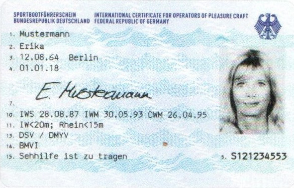

Wer einen Sportbootführerschein erwerben will, muss folgende Anforderungen erfüllen:
Seine Befähigung hat er vor einem Prüfungsausschuss des Deutschen Motoryachtverbandes (DMYV) oder des Deutschen Segler-Verbandes (DSV) nachzuweisen. Die Zulassung zur Prüfung muss auf einem Formblatt der genannten Verbände bei dem zuständigen Prüfungsausschuss beantragt werden. Diesem Antrag sind folgende Unterlagen beizufügen:
► Ein aktuelles Lichtbild 38 x 45 mm, ohne Kopfbedeckung, im Halbprofil.
► Ein ärztliches Tauglichkeitszeugnis, nicht älter als ein Jahr.
► Die Kopie eines gültigen Kfz-Führerscheins oder, auf Verlangen, ein Führungszeugnis nach den Vorschriften des Bundeszentralregisters, nicht älter als 6 Monate.
► Eine Erklärung, ob dem Bewerber die Fahrerlaubnis bereits entzogen worden ist.
► Bei Bewerbern, die noch nicht 18 Jahre alt sind, die Zustimmung des gesetzlichen Vertreters.
► Soweit erforderlich, eine ärztliche Bescheinigung einer Legasthenie oder Unterlagen, die zur Glaubhaftmachung nicht ausreichender Deutschkenntnisse geeignet sind.
► Soweit erteilt, eine Kopie des amtlichen Sportbootführerscheins mit dem Geltungsbereich Seeschifffahrtsstraßen.